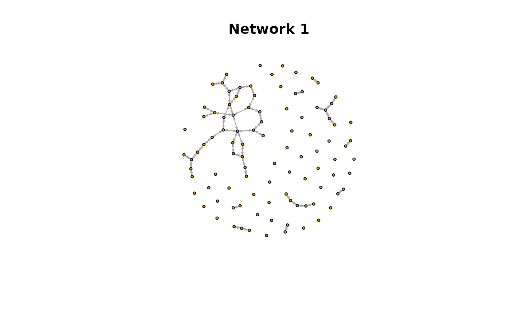
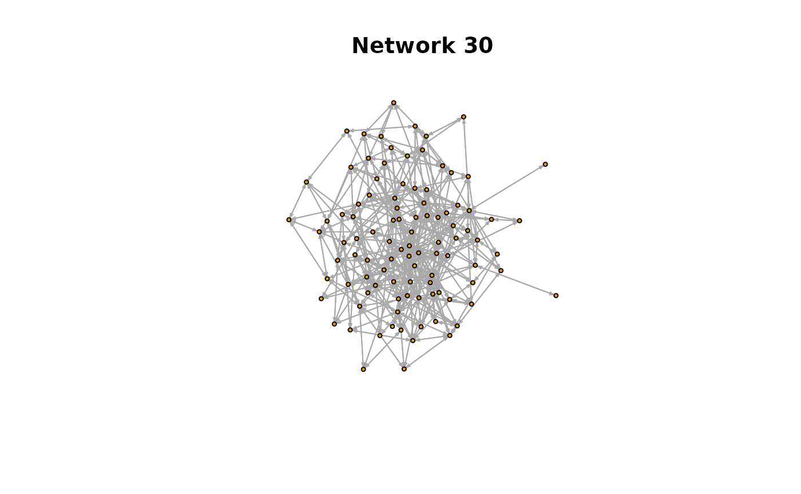
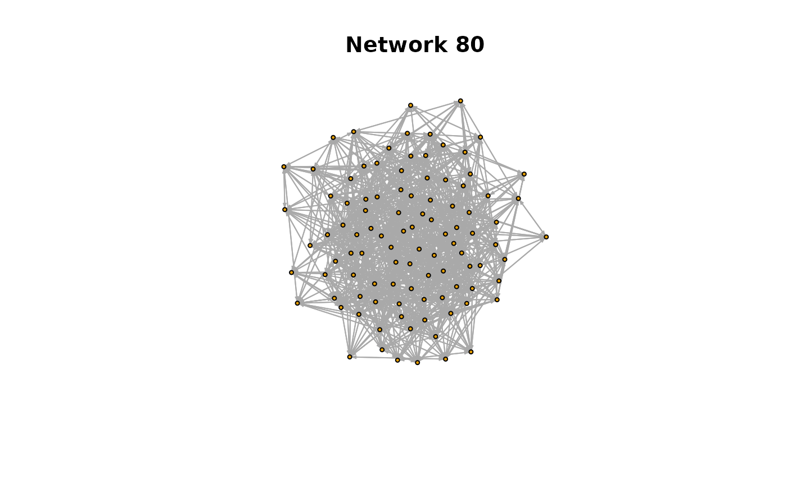
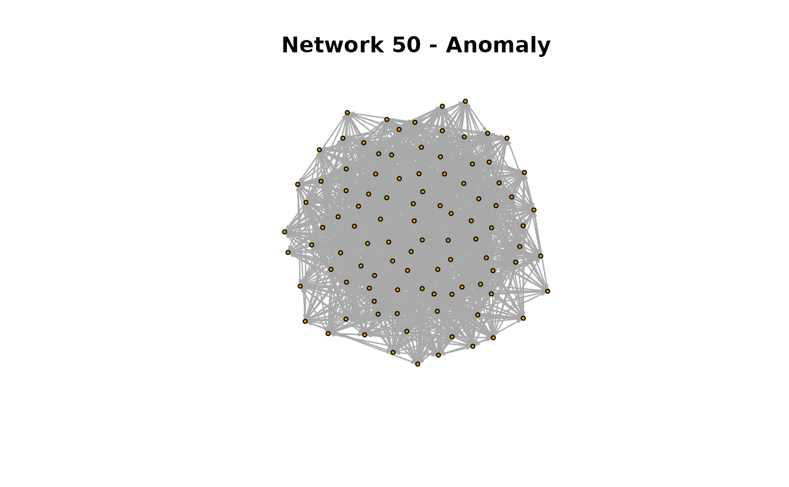
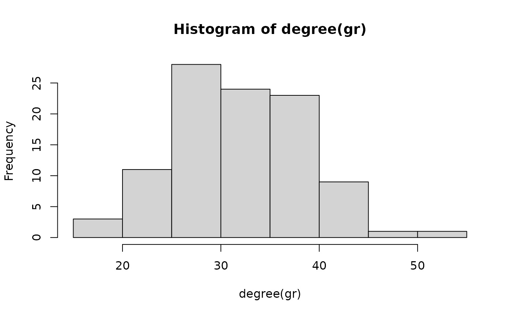
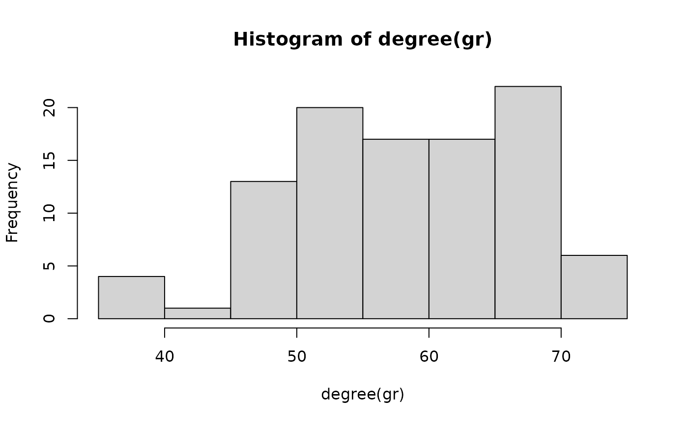
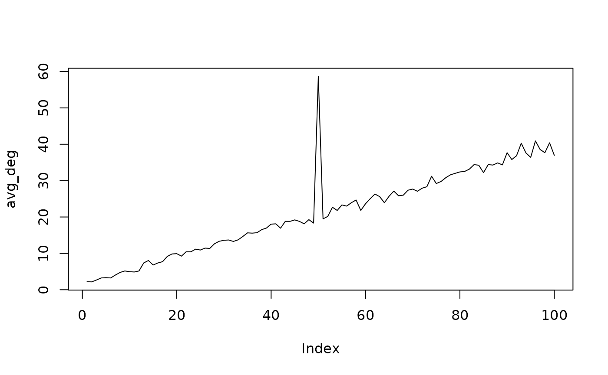
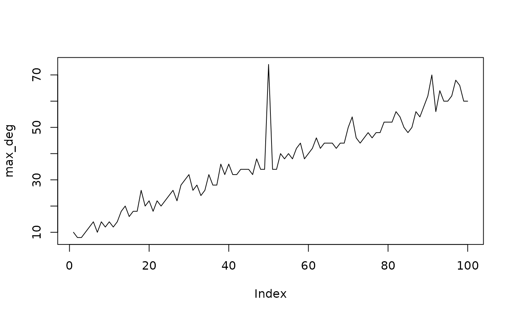

oddnet
oddnet.Rmd
library(oddnet)
library(igraph)
#>
#> Attaching package: 'igraph'
#> The following objects are masked from 'package:stats':
#>
#> decompose, spectrum
#> The following object is masked from 'package:base':
#>
#> unionSynthetic data
We create a sequence of temporal networks based on the Erdos Renyi construction and insert an anomaly at location 50. For this series, we make the edge probability increase from 0.01 to 0.2.
set.seed(1)
networks <- list()
p.or.m.seq <- seq(from = 0.01, to = 0.2, length.out = 100)
p.or.m.seq[50] <- p.or.m.seq[50] + 0.2 # anomalous network
for(i in 1:100){
gr <- igraph::erdos.renyi.game(100, p.or.m = p.or.m.seq[i])
networks[[i]] <- igraph::as_adjacency_matrix(gr)
}Let’s plot a couple of networks.
Plotting
# Plotting
network_1 <- networks[[1]]
gr <- igraph::graph_from_adjacency_matrix(network_1)
plot(gr,
layout = layout_with_fr,
vertex.size=3,
vertex.label=NA,
edge.arrow.size=0.2,
main = "Network 1")
network_30 <- networks[[30]]
gr <- igraph::graph_from_adjacency_matrix(network_30)
plot(gr,
layout = layout_with_fr,
vertex.size=3,
vertex.label=NA,
edge.arrow.size=0.2,
main = "Network 30")
network_80 <- networks[[80]]
gr <- igraph::graph_from_adjacency_matrix(network_80)
plot(gr,
layout = layout_with_fr,
vertex.size=3,
vertex.label=NA,
edge.arrow.size=0.2,
main = "Network 80")
The networks have increased in connectivity because the edge probability increases over time. Let’s look at the anomalous network at t = 50.
# Plotting
network_a <- networks[[50]]
gr <- igraph::graph_from_adjacency_matrix(network_a)
plot(gr,
layout = layout_with_fr,
vertex.size=3,
vertex.label=NA,
edge.arrow.size=0.2,
main = "Network 50 - Anomaly")
Features
Both networks at t = 50 and t = 80 look alike. Let’s explore their degree distributions.
network_80 <- networks[[80]]
gr <- igraph::graph_from_adjacency_matrix(network_80)
hist(degree(gr))
network_a <- networks[[50]]
gr <- igraph::graph_from_adjacency_matrix(network_a)
hist(degree(gr))
We see a clear difference in the degree distributions of the two networks. Let’s look at the average degree of the network sequence.
avg_deg <- rep(0, 100)
max_deg <- rep(0, 100)
for(i in 1:100){
network <- networks[[i]]
gr <- igraph::graph_from_adjacency_matrix(network)
avg_deg[i] <- mean(degree(gr))
max_deg[i] <- max(degree(gr))
}
plot(avg_deg, type = "l")
plot(max_deg, type = "l")
We clearly see the anomaly at 50. Oddnet is a feature-based method. By computing many features it finds anomalies using time series methods. Let’s find the anomalous networks using oddnet.
Anomalies
anomalous_networks(networks)
#> Warning in sqrt(diag(best$var.coef)): NaNs produced
#> Warning in sqrt(diag(best$var.coef)): NaNs produced
#> Leave-out-out KDE outliers using lookout algorithm
#>
#> Call: lookout::lookout(X = dfpca[, 1:dd], alpha = alpha)
#>
#> Outliers Probability
#> 1 50 0We see the correct anomaly is identified with low conditional probability.